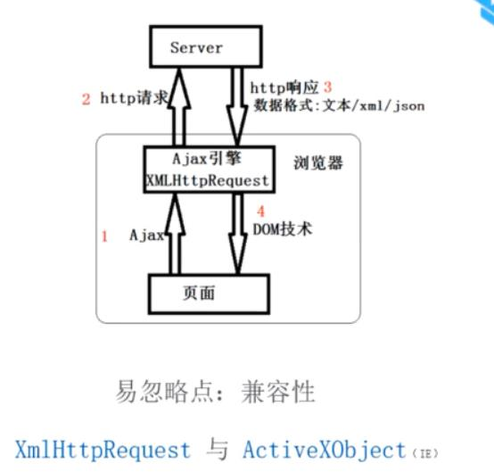
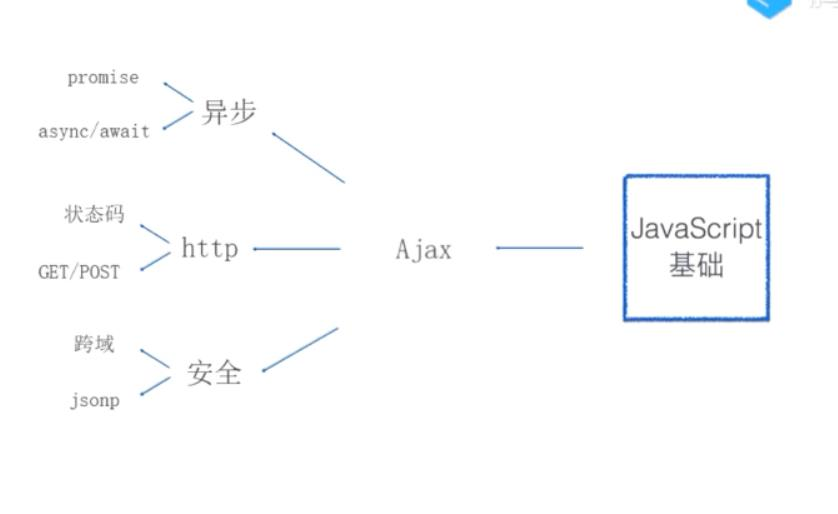
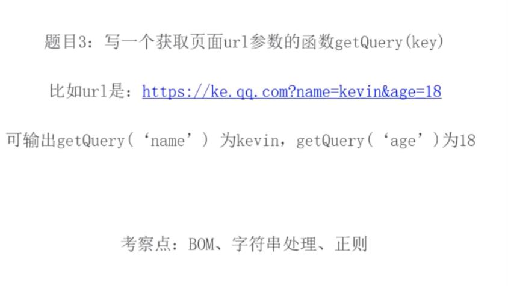
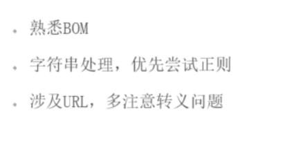
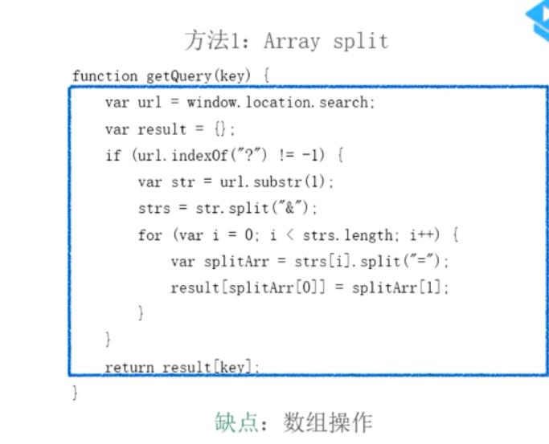
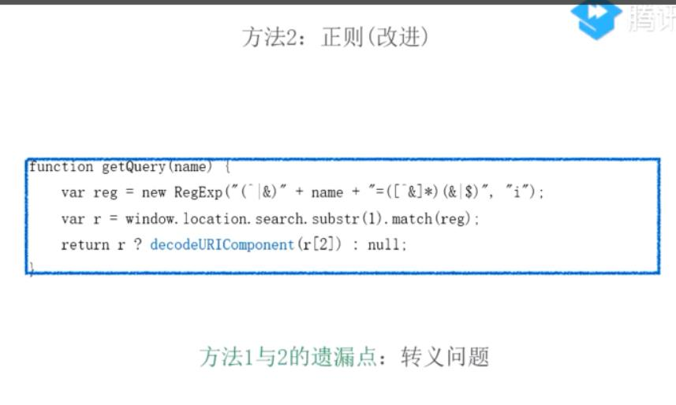
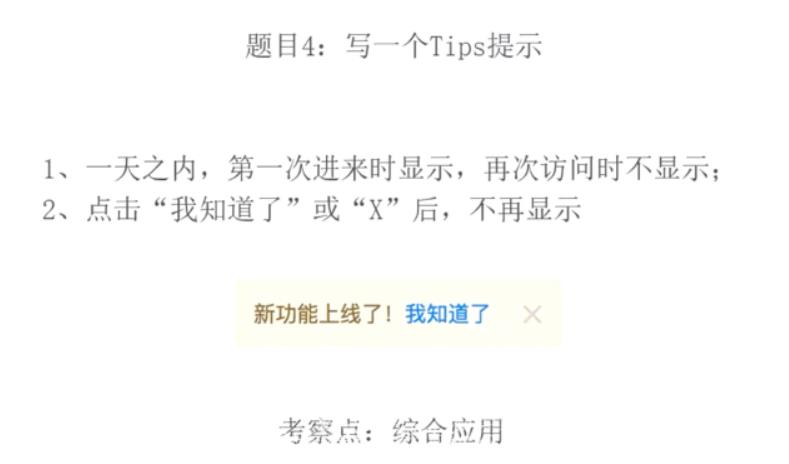
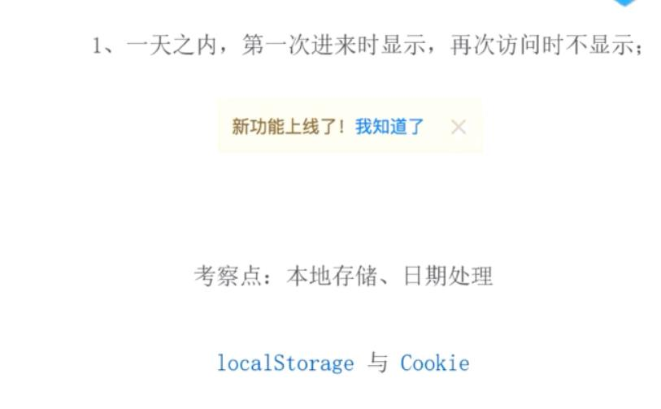
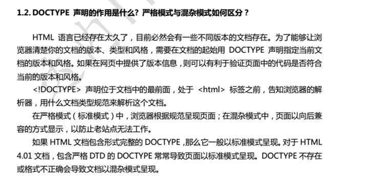

1.编写一个函数将列表子元素的顺序进行反转
<ul id="target">
<li>1</li>
<li>2</li>
<li>3</li>
<li>4</li>
</ul>
解析思路①：
var ul=document.getElementById("target");
var lists=ul.getElementByTagName("li");
var len=lists.length;
while(len--){
ul.appendChild(ul.childNodes[len])
}
缺点：
每次循环都会影响dom生成，肯定会损耗性能
解析思路②：fragment
var ul=document.getElementById("tatget");
var lists=ul.getElementByTagName("li");
var fragment=document.createDocumentFragment();
for (var i=lists.length-1;i>0;i--){
fragment.appendChild(lists[i]);
}
ul.appendChild(fragment);
优点：使用了document.createDocumentFragment()
方法3：Array Reverse 思路加分，性能较高
var ul =document.getElementById("target");
var children=Array.prototype.slice.call(ul.getElementByTagName("li"),0);
var len=children.length;
var str="";
childtren.reverse();
for*(var i=0;i<len;i++){
str+=children[i].outerHTML;
}
ul.innerHTML=str;
方法4： innerHTML 效率最优
var ul=document.getElementById("target");
var lists=ul.getElementByTagName("li");
var str="";
for(var i=lists.lenght-1;i>0;i--){
str+="<li>"+lists[i].innerHTML+"</li>";
}
ul.innerHTMl=str;
测试：jsperf.com
越简单的题目，越体现水平
脱离框架，熟练的使用dom操作
出现循环的地方，多考虑性能
2.画出ajax模型图








5.vue的通信： 子传父，父传子，非兄弟组件非父子组件怎么通信
6.es6的新特性有哪些，重点问到了class
7.你们团队有多少人，团队怎么分工的合作的，有没有用过git，不是github
8.在最近的项目中你负责什么，是怎么做的
9.谈谈购物车页面的你的逻辑怎么实现的
加入购物车，主要靠详情页地址栏传过来的产品id来实现与后端接口更新购物车数据库表，购物车页面内容的主要是通过后台session保存的用户id来判断用户是否登录，从而通过用户id进行ajax请求购物车数据
10.如何在用户进入详情页的时候根据用户是否登录来选择是否显示产品相关详情
这个主要用cookie，可以将登录时的用户id保存在cookie中，可以通过查询cookie是否有用户id存在，从而判断是否登录
11.你都做过哪些动画效果（不能是楼层和轮播，太low）
12.如果让你上传一张图片，如何在前端写逻辑代码限制他的图片类型和图片大小
13.谈谈用js编程和面向对象编程的看法和区别
14.写一个判断邮箱的正则
15.vue的路由是怎么实现的，请写出来
16.vue是怎么通信的，请写出来
17.http中封装了新的什么功能
18.ng4.0和ng2.0相比的区别
19.写一个使用个屏幕大小的响应式布局的网页以及app有没有问题
20.有没有封装过js的库，怎么封装的
21.ie兼容性为什么需要点击两次才会跳转，怎么解决的
22.项目中用到了什么第三方的ui组件
23.写出compoents下面的目录结构
24.main.js下引入了哪些组件
25.你在实际工作怎么保证性能优化
26.怎么处理客户缓存
27.你怎么理解点击穿透的
28.jQuery问为什么进行链式操作，是否理解extend扩展
29.怎么解决函数名冲突的问题
30.请说下具体使用vue的理解？
答：
1、使用vue不必担心布局更改和类名重复导致的js重写，因为它是靠数据驱动双向绑定，底层是通过Object.defineProperty() 定义的数据 set、get 函数原理实现。
2、组件化开发，让项目的可拓展性、移植性更好，代码重用性更高，就好像农民工建房子，拿起自己的工具包就可以开工。项目经理坐等收楼就好。
3、单页应用的体验零距离接触安卓原生应用，局部组件更新界面，让用户体验更快速省时。
4、js的代码无形的规范，团队合作开发代码可阅读性更高
31.你觉得哪些项目适合vue框架？
答：
1、数据信息量比较多的，反之类似企业网站就无需此框架了。
2、手机web和app应用多端共用一套界面的项目，因为使用vue.cli+webpack后的前端目录，非常有利于项目的跨平台部署。
32.怎么理解MVVM模式的这些框架？
答：
1、M就是Model模型层，存的一个数据对象。
2、V就是View视图层，所有的html节点在这一层。
3、VM就是ViewModel，它通过data属性连接Model模型层，通过el属性连接View视图层。
33.PC端项目你会在哪些场景使用Vue框架？
答：上万级数据需要瀑布流更新和搜索的时候，因为数据庞大的时候，用原生的dom操作js和html都会有列表的html布局，迭代很困难。再一个dom节点的大面积添加会影响性能。
那么vue为什么解决这些问题呢？
第一：只需用v-for在view层一个地方遍历数据即可，无需复制一段html代码在js和html两个地方。
第二：vue通过Virtual Dom就是在js中模拟DOM对象树来优化DOM操作。
34.active-class是哪个组件的属性？嵌套路由怎么定义？
vue-router模块的router-link组件。
35.怎么定义vue-router的动态路由？怎么获取传过来的动态参数？
答：在router目录下的index.js文件中，对path属性加上/:id。 使用router对象的params.id
36.vue-router有哪几种导航钩子
三种，一种是全局导航钩子：router.beforeEach(to,from,next)，作用：跳转前进行判断拦截。第二种：组件内的钩子；第三种：单独路由独享组件
37.scss是什么？安装使用的步骤是？有哪几大特性？
预处理css，把css当前函数编写，定义变量,嵌套。 先装css-loader、node-loader、sass-loader等加载器模块，在webpack-base.config.js配置文件中加多一个拓展:extenstion，再加多一个模块：module里面test、loader
css的预编译。
使用步骤：
第一步：用npm 下三个loader（sass-loader、css-loader、node-sass）
第二步：在build目录找到webpack.base.config.js，在那个extends属性中加一个拓展.scss
第三步：还是在同一个文件，配置一个module属性
第四步：然后在组件的style标签加上lang属性 ，例如：lang=”scss”
有哪几大特性:
1、可以用变量，例如（$变量名称=值）；
2、可以用混合器，例如（）
3、可以嵌套
38.mint-ui是什么？怎么使用？说出至少三个组件使用方法？
基于vue的前端组件库。npm安装，然后import样式和js，vue.use（mintUi）全局引入。在单个组件局部引入：import {Toast} from ‘mint-ui’。组件一：Toast(‘登录成功’)；组件二：mint-header；组件三：mint-swiper
39.v-model是什么？怎么使用？ vue中标签怎么绑定事件？
答：可以实现双向绑定，指令（v-class、v-for、v-if、v-show、v-on）。vue的model层的data属性。绑定事件：<input @click=doLog() />
40.axios是什么？怎么使用？描述使用它实现登录功能的流程？
答：请求后台资源的模块。npm install axios -S装好，然后发送的是跨域，需在配置文件中config/index.js进行设置。后台如果是Tp5则定义一个资源路由。js中使用import进来，然后.get或.post。返回在.then函数中如果成功，失败则是在.catch函数中
41.axios+tp5进阶中，调用axios.post(‘api/user’)是进行的什么操作？
axios.put(‘api/user/8′)呢？
跨域，添加用户操作，更新操作。
42.什么是RESTful API？怎么使用?
答：是一个api的标准，无状态请求。请求的路由地址是固定的，如果是tp5则先路由配置中把资源路由配置好。标准有：.post .put .delete
43.vuex是什么？怎么使用？哪种功能场景使用它？
答：vue框架中状态管理。在main.js引入store，注入。新建了一个目录store，….. export 。场景有：单页应用中，组件之间的状态。音乐播放、登录状态、加入购物车
44.mvvm框架是什么？它和其它框架（jquery）的区别是什么？哪些场景适合？
答：一个model+view+viewModel框架，数据模型model，viewModel连接两个
区别：vue数据驱动，通过数据来显示视图层而不是节点操作。
场景：数据操作比较多的场景，更加便捷
45.自定义指令（v-check、v-focus）的方法有哪些？它有哪些钩子函数？还有哪些钩子函数参数？
答：全局定义指令：在vue对象的directive方法里面有两个参数，一个是指令名称，另外一个是函数。组件内定义指令：directives
钩子函数：bind（绑定事件触发）、inserted(节点插入的时候触发)、update（组件内相关更新）
钩子函数参数：el、binding
46.说出至少4种vue当中的指令和它的用法？
答：v-if：判断是否隐藏；v-for：数据循环出来；v-bind:class：绑定一个属性；v-model：实现双向绑定
47.vue-router是什么？它有哪些组件？
答：vue用来写路由一个插件。router-link、router-view
48.导航钩子有哪些？它们有哪些参数？
答：导航钩子有：a/全局钩子和组件内独享的钩子。b/beforeRouteEnter、afterEnter、beforeRouterUpdate、beforeRouteLeave
参数：有to（去的那个路由）、from（离开的路由）、next（一定要用这个函数才能去到下一个路由，如果不用就拦截）最常用就这几种
49.Vue的双向数据绑定原理是什么？或者问（vue data是怎么实现的？）
答：vue.js 是采用数据劫持结合发布者-订阅者模式的方式，通过Object.defineProperty()来劫持各个属性的setter，getter，在数据变动时发布消息给订阅者，触发相应的监听回调。
具体步骤：
第一步：需要observe的数据对象进行递归遍历，包括子属性对象的属性，都加上 setter和getter
这样的话，给这个对象的某个值赋值，就会触发setter，那么就能监听到了数据变化
第二步：compile解析模板指令，将模板中的变量替换成数据，然后初始化渲染页面视图，并将每个指令对应的节点绑定更新函数，添加监听数据的订阅者，一旦数据有变动，收到通知，更新视图
第三步：Watcher订阅者是Observer和Compile之间通信的桥梁，主要做的事情是:
1、在自身实例化时往属性订阅器(dep)里面添加自己
2、自身必须有一个update()方法
3、待属性变动dep.notice()通知时，能调用自身的update()方法，并触发Compile中绑定的回调，则功成身退。
第四步：MVVM作为数据绑定的入口，整合Observer、Compile和Watcher三者，通过Observer来监听自己的model数据变化，通过Compile来解析编译模板指令，最终利用Watcher搭起Observer和Compile之间的通信桥梁，达到数据变化 -> 视图更新；视图交互变化(input) -> 数据model变更的双向绑定效果。
50.请详细说下你对vue生命周期的理解？
：总共分为8个阶段创建前/后，载入前/后，更新前/后，销毁前/后。
创建前/后： 在beforeCreated阶段，vue实例的挂载元素$el和数据对象data都为undefined，还未初始化。在created阶段，vue实例的数据对象data有了，$el还没有。
载入前/后：在beforeMount阶段，vue实例的$el和data都初始化了，但还是挂载之前为虚拟的dom节点，data.message还未替换。在mounted阶段，vue实例挂载完成，data.message成功渲染。
更新前/后：当data变化时，会触发beforeUpdate和updated方法。
销毁前/后：在执行destroy方法后，对data的改变不会再触发周期函数，说明此时vue实例已经解除了事件监听以及和dom的绑定，但是dom结构依然存在
51.请说下封装 vue 组件的过程？
答：首先，组件可以提升整个项目的开发效率。能够把页面抽象成多个相对独立的模块，解决了我们传统项目开发：效率低、难维护、复用性等问题。
然后，使用Vue.extend方法创建一个组件，然后使用Vue.component方法注册组件。子组件需要数据，可以在props中接受定义。而子组件修改好数据后，想把数据传递给父组件。可以采用emit方法。
52.你是怎么认识vuex的？
答：vuex可以理解为一种开发模式或框架。比如PHP有thinkphp，java有spring等。
通过状态（数据源）集中管理驱动组件的变化（好比spring的IOC容器对bean进行集中管理）。
应用级的状态集中放在store中； 改变状态的方式是提交mutations，这是个同步的事物； 异步逻辑应该封装在action中。
53.vue-loader是什么？使用它的用途有哪些？
答：解析.vue文件的一个加载器，跟template/js/style转换成js模块。
用途：js可以写es6、style样式可以scss或less、template可以加jade等
54.请说出vue.cli项目中src目录每个文件夹和文件的用法？
答：assets文件夹是放静态资源；components是放组件；router是定义路由相关的配置;view视图；app.vue是一个应用主组件；main.js是入口文件
55.vue.cli中怎样使用自定义的组件？有遇到过哪些问题吗？
答：第一步：在components目录新建你的组件文件（smithButton.vue），script一定要export default {
第二步：在需要用的页面（组件）中导入：import smithButton from ‘../components/smithButton.vue’
第三步：注入到vue的子组件的components属性上面,components:{smithButton}
第四步：在template视图view中使用，<smith-button> </smith-button>
问题有：smithButton命名，使用的时候则smith-button。
56.聊聊你对Vue.js的template编译的理解？
答：简而言之，就是先转化成AST树，再得到的render函数返回VNode（Vue的虚拟DOM节点）
详情步骤：
首先，通过compile编译器把template编译成AST语法树（abstract syntax tree 即 源代码的抽象语法结构的树状表现形式），compile是createCompiler的返回值，createCompiler是用以创建编译器的。另外compile还负责合并option。
然后，AST会经过generate（将AST语法树转化成render funtion字符串的过程）得到render函数，render的返回值是VNode，VNode是Vue的虚拟DOM节点，里面有（标签名、子节点、文本等等）
57.vue响应式原理？
58.vue-router实现原理？
59.为什么要选vue？与其它框架对比的优势和劣势？
60.vuejs与angularjs以及react的区别？
61.vuex是用来做什么的？
62.vue源码结构
63.HTML5中我们如何实现应用缓存？
64.HTML5中的应用缓存是什么？
65.我们如何刷新浏览器的应用缓存？
66.应用缓存中的回退是什么？
67.什么是WebSQL？
68.Doctype作用? 严格模式与混杂模式-如何触发这两种

69.link 和@import 的区别是?
70.CSS的盒子模型？
71.HTML5 应用程序缓存和浏览器缓存有什么区别？
72.什么是Web Workers？为什么我们需要他们？
73.应用缓存中的网络是什么？
74.本地存储和会话存储的区别
75.const promise = new Promise((resolve, reject) => {
console.log(1)
resolve()
console.log(2)
})
promise.then(() => {
console.log(3)
})
console.log(4)
运行结果：
1
2
4
3
解释：Promise 构造函数是同步执行的，promise.then 中的函数是异步执行的
76.const promise1 = new Promise((resolve, reject) => {
setTimeout(() => {
resolve('success')
}, 1000)
})
const promise2 = promise1.then(() => {
throw new Error('error!!!')
})
console.log('promise1', promise1)
console.log('promise2', promise2)
setTimeout(() => {
console.log('promise1', promise1)
console.log('promise2', promise2)
}, 2000)
运行结果：
promise1 Promise { <pending> }
promise2 Promise { <pending> }
(node:50928) UnhandledPromiseRejectionWarning: Unhandled promise rejection (rejection id: 1): Error: error!!!
(node:50928) [DEP0018] DeprecationWarning: Unhandled promise rejections are deprecated. In the future, promise rejections that are not handled will terminate the Node.js process with a non-zero exit code.
promise1 Promise { 'success' }
promise2 Promise {
<rejected> Error: error!!!
at promise.then (...)
at <anonymous> }
解释：promise 有 3 种状态：pending、fulfilled 或 rejected。状态改变只能是 pending->fulfilled 或者 pending->rejected，状态一旦改变则不能再变。上面 promise2 并不是 promise1，而是返回的一个新的 Promise 实例。
77.const promise = new Promise((resolve, reject) => {
resolve('success1')
reject('error')
resolve('success2')
})
promise
.then((res) => {
console.log('then: ', res)
})
.catch((err) => {
console.log('catch: ', err)
})
运行结果：
then: success1
解释：构造函数中的 resolve 或 reject 只有第一次执行有效，多次调用没有任何作用，呼应代码二结论：promise 状态一旦改变则不能再变。
78.Promise.resolve(1)
.then((res) => {
console.log(res)
return 2
})
.catch((err) => {
return 3
})
.then((res) => {
console.log(res)
})
运行结果：
1
2
解释：promise 可以链式调用。提起链式调用我们通常会想到通过 return this 实现，不过 Promise 并不是这样实现的。promise 每次调用 .then 或者 .catch 都会返回一个新的 promise，从而实现了链式调用。
79.const promise = new Promise((resolve, reject) => {
setTimeout(() => {
console.log('once')
resolve('success')
}, 1000)
})
const start = Date.now()
promise.then((res) => {
console.log(res, Date.now() - start)
})
promise.then((res) => {
console.log(res, Date.now() - start)
})
运行结果：
once
success 1005
success 1007
解释：promise 的 .then 或者 .catch 可以被调用多次，但这里 Promise 构造函数只执行一次。或者说 promise 内部状态一经改变，并且有了一个值，那么后续每次调用 .then 或者 .catch 都会直接拿到该值。
80.Promise.resolve()
.then(() => {
return new Error('error!!!')
})
.then((res) => {
console.log('then: ', res)
})
.catch((err) => {
console.log('catch: ', err)
})
运行结果：
then: Error: error!!!
at Promise.resolve.then (...)
at ...
解释：.then 或者 .catch 中 return 一个 error 对象并不会抛出错误，所以不会被后续的 .catch 捕获，需要改成其中一种：
return Promise.reject(new Error('error!!!'))
throw new Error('error!!!')
因为返回任意一个非 promise 的值都会被包裹成 promise 对象，即 return new Error('error!!!') 等价于 return Promise.resolve(new Error('error!!!'))。
81.const promise = Promise.resolve()
.then(() => {
return promise
})
promise.catch(console.error)
运行结果：
TypeError: Chaining cycle detected for promise #<Promise>
at <anonymous>
at process._tickCallback (internal/process/next_tick.js:188:7)
at Function.Module.runMain (module.js:667:11)
at startup (bootstrap_node.js:187:16)
at bootstrap_node.js:607:3
解释：.then 或 .catch 返回的值不能是 promise 本身，否则会造成死循环。类似于：
process.nextTick(function tick () {
console.log('tick')
process.nextTick(tick)
})
82.Promise.resolve(1)
.then(2)
.then(Promise.resolve(3))
.then(console.log)
运行结果：
1
解释：.then 或者 .catch 的参数期望是函数，传入非函数则会发生值穿透。
83.Promise.resolve()
.then(function success (res) {
throw new Error('error')
}, function fail1 (e) {
console.error('fail1: ', e)
})
.catch(function fail2 (e) {
console.error('fail2: ', e)
})
运行结果：
fail2: Error: error
at success (...)
at ...
解释：.then 可以接收两个参数，第一个是处理成功的函数，第二个是处理错误的函数。.catch 是 .then 第二个参数的简便写法，但是它们用法上有一点需要注意：.then 的第二个处理错误的函数捕获不了第一个处理成功的函数抛出的错误，而后续的 .catch 可以捕获之前的错误。当然以下代码也可以：
Promise.resolve()
.then(function success1 (res) {
throw new Error('error')
}, function fail1 (e) {
console.error('fail1: ', e)
})
.then(function success2 (res) {
}, function fail2 (e) {
console.error('fail2: ', e)
})
84.process.nextTick(() => {
console.log('nextTick')
})
Promise.resolve()
.then(() => {
console.log('then')
})
setImmediate(() => {
console.log('setImmediate')
})
console.log('end')
运行结果：
end
nextTick
then
setImmediate
解释：process.nextTick 和 promise.then 都属于 microtask，而 setImmediate 属于 macrotask，在事件循环的 check 阶段执行。事件循环的每个阶段（macrotask）之间都会执行 microtask，事件循环的开始会先执行一次 microtask。
85.JS用的是什么版本，你怎么解决兼容性问题。兼容的浏览器都有哪些，具体是什么说出来？
86.你最近看过什么书，名字是什么，具体是什么说出来
87.你工作的内容pc还是mobile多，你处理前端页面多还是数据多
88.Vue和Vuex的关系是什么？
89.你了解过混合开发吗，有体现在哪个项目中吗‘，除了微信的。用什么开发？
90.比如一个api保存在哪里，靠什么集成，它的构造函数是谁？怎么拿到的？
91.http1.0和http2.0的区别，除了他们还有shenm
92.SSL的原理是什么
93.你了解过java语言吗
94.Get和Post的区别是什么，post安全吗？
95.HTML5 为什么只需要写 <!DOCTYPE HTML>？
HTML 4.01 中的 doctype 需要对 DTD 进行引用，因为 HTML 4.01 基于 SGML。而 HTML 5 不基于 SGML，因此不需要对 DTD 进行引用，但是需要 doctype 来规范浏览器的行为。其中，SGML是标准通用标记语言,简单的说，就是比HTML,XML更老的标准，这两者都是由SGML发展而来的。BUT，HTML5不是的。
96.行内元素有哪些？块级元素有哪些？ 空(void)元素有那些？
块级元素的前后的前后都会自动换行，如同存在换行符一样，默认情况下，块级元素会独占一行，例如<p><div><hn>都是块级元素。在显示这些元素中间的文本时，都将从新行中开始显示，其后的内容也将在新行中显示
97.线程与进程（1月4日）？
1.定义
进程是具有一定独立功能的程序关于某个数据集合上的一次运行活动,进程是系统进行资源分配和调度的一个独立单位.
线程是进程的一个实体,是CPU调度和分派的基本单位,它是比进程更小的能独立运行的基本单位.线程自己基本上不拥有系统资源,只拥有一点在运行中必不可少的资源(如程序计数器,一组寄存器和栈),但是它可与同属一个进程的其他的线程共享进程所拥有的全部资源.
2.关系
一个线程可以创建和撤销另一个线程;同一个进程中的多个线程之间可以并发执行.
相对进程而言，线程是一个更加接近于执行体的概念，它可以与同进程中的其他线程共享数据，但拥有自己的栈空间，拥有独立的执行序列。
3.区别
进程和线程的主要差别在于它们是不同的操作系统资源管理方式。进程有独立的地址空间，一个进程崩溃后，在保护模式下不会对其它进程产生影响，而线程只是一个进程中的不同执行路径。线程有自己的堆栈和局部变量，但线程之间没有单独的地址空间，一个线程死掉就等于整个进程死掉，所以多进程的程序要比多线程的程序健壮，但在进程切换时，耗费资源较大，效率要差一些。但对于一些要求同时进行并且又要共享某些变量的并发操作，只能用线程，不能用进程。
1) 简而言之,一个程序至少有一个进程,一个进程至少有一个线程.
2) 线程的划分尺度小于进程，使得多线程程序的并发性高。
3) 另外，进程在执行过程中拥有独立的内存单元，而多个线程共享内存，从而极大地提高了程序的运行效率。
4) 线程在执行过程中与进程还是有区别的。每个独立的线程有一个程序运行的入口、顺序执行序列和程序的出口。但是线程不能够独立执行，必须依存在应用程序中，由应用程序提供多个线程执行控制。
5) 从逻辑角度来看，多线程的意义在于一个应用程序中，有多个执行部分可以同时执行。但操作系统并没有将多个线程看做多个独立的应用，来实现进程的调度和管理以及资源分配。这就是进程和线程的重要区别。
4.优缺点
线程和进程在使用上各有优缺点：线程执行开销小，但不利于资源的管理和保护；而进程正相反。同时，线程适合于在SMP机器上运行，而进程则可以跨机器迁移。
98.